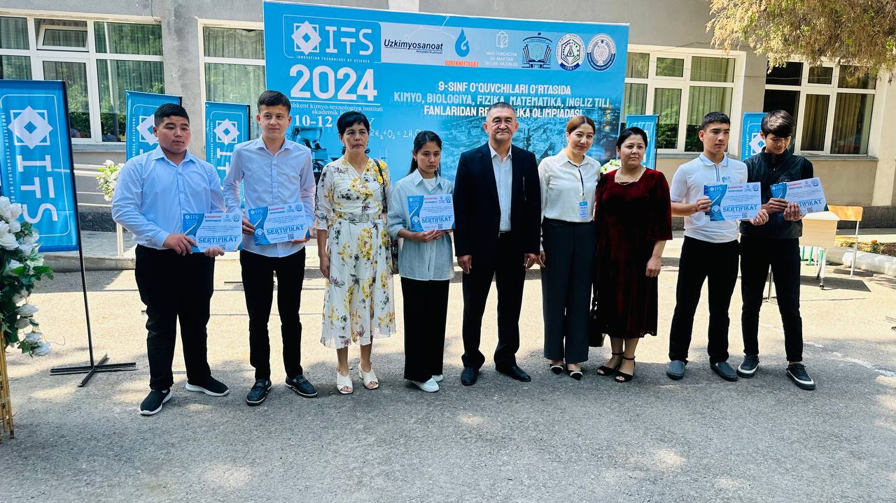
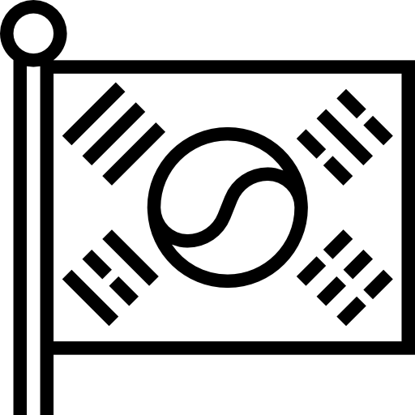

Yo'nalishlar
Aniq fanlar (texnika)
Matematika, fizika fanlari chuqurlashtirib o`qitiladi.
Aniq fanlar (iqtisod)
Ingliz tili, matematika fanlari chuqurlashtirib o`qitiladi.
Tabiiy fanlar (biologiya)
Biologiya, kimyo fanlari chuqurlashtirib o`qitiladi.
Tabiiy fanlar (kimyo-texnologiya)
Kimyo, matematika fanlari chuqurlashtirib o`qitiladi.
Nemis tili
Akademik litseyda ikkinchi til sifatida o`qitiladi.

Koreys tili
Akademik litseyda koreys tili ham o`qitish yo`lga qo`yilgan.